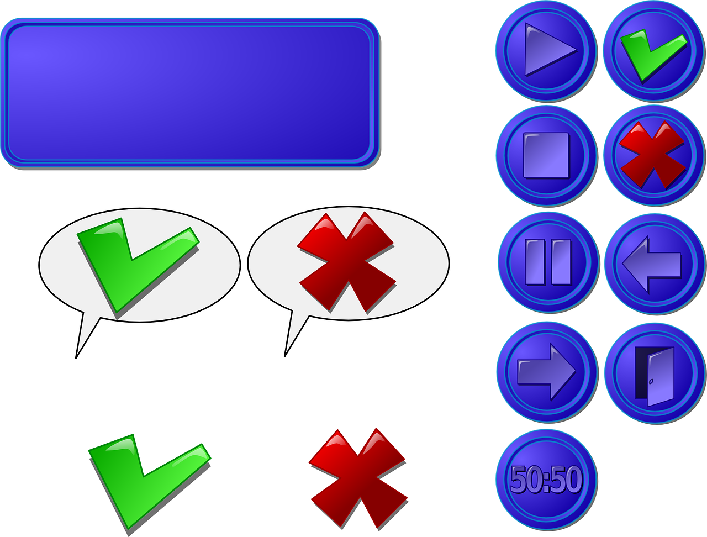

El propósito de este sitio es investigar y conocer acerca de la interfaz de usuario y la interación humano ordenador como proceso complementario a las unidades propuestas dentro del curso actual.
Interfaz de Usuario
También conocida como UI, podemos definirla como el medio a través del cual el usuario interactúa con un dispositivo tecnológico abarcando todos los puntos de contacto entre la persona y el equipo.
Existen parámetros internacionales y mundiales sobre las buenas prácticas para desarrollar este elemento, el más conocido es la norma ISO 9241, que se enfoca en la ergonomía de la interacción entre la persona y el sistema, en aspectos como la facilidad de la comunicación y el dinamismo.
Dentro de una página web, aplicación o cualquier herramienta digital, el diseño de la interfaz del usuario debe garantizar tolerancia a los errores, personalización, control, adecuación al aprendizaje y conformidad con las expectativas del usuario.
Existen principios de coherencia y calidad gráfica que deben seguirse para desarrollar una interfaz, como emplear códigos de colores para apoyar las tareas de los usuarios, minimalismo y estandarización.

Interacción Humano Ordenador
También conocida como HCI, se define como el entendimiento, diseño, evaluación e implementación de sistemas interactivos para el uso por humanos.
“HCI es el diseño de sistemas computacionales que apoyan a personas para que puedan llevar a cabo sus actividades de manera eficiente y segura.” [Preece et al., 1994]
“HCI es el estudio y práctica de usabilidad. Es sobre el entendimiento, y creación de software y otras tecnologías que la gente querrá utilizar, será capaz de utilizar y encontrará efectivo al usarla.” [Carroll, 2002]
“No debemos de enfocarnos tanto en la interacción humano-computadora, sino más en la interacción entre humanos a través de la computadora.” [comentario de Terry Winogard]
La HCI se lleva a cabo en un entorno (contexto) social y organizacional.
Diferentes tipos de aplicaciones se requieren para diferentes propósitos y se necesita cuidado para dividir las tareas entre humanos y máquinas, asegurando que esas actividades creativas y no repetitivas sean asignadas a los humanos mientras que las otras sean asignadas a las máquinas.